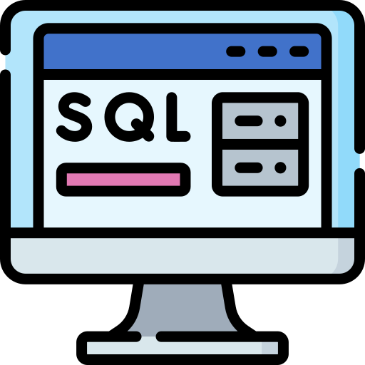
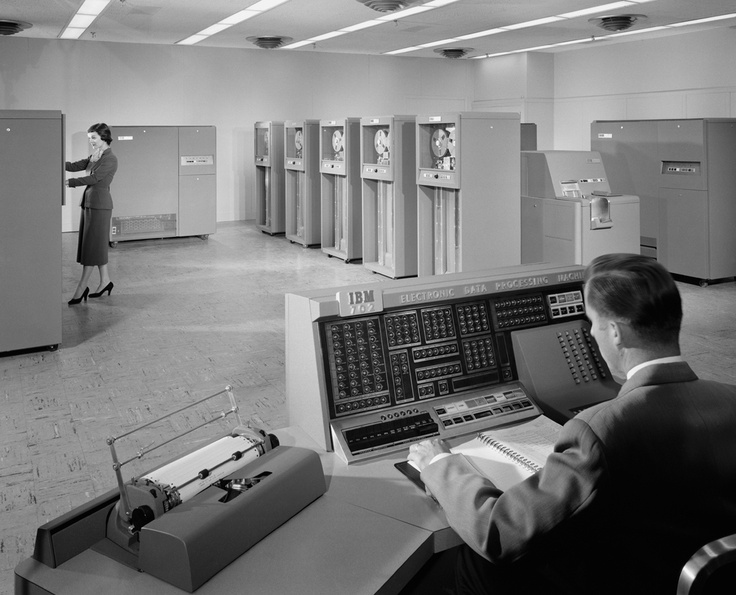
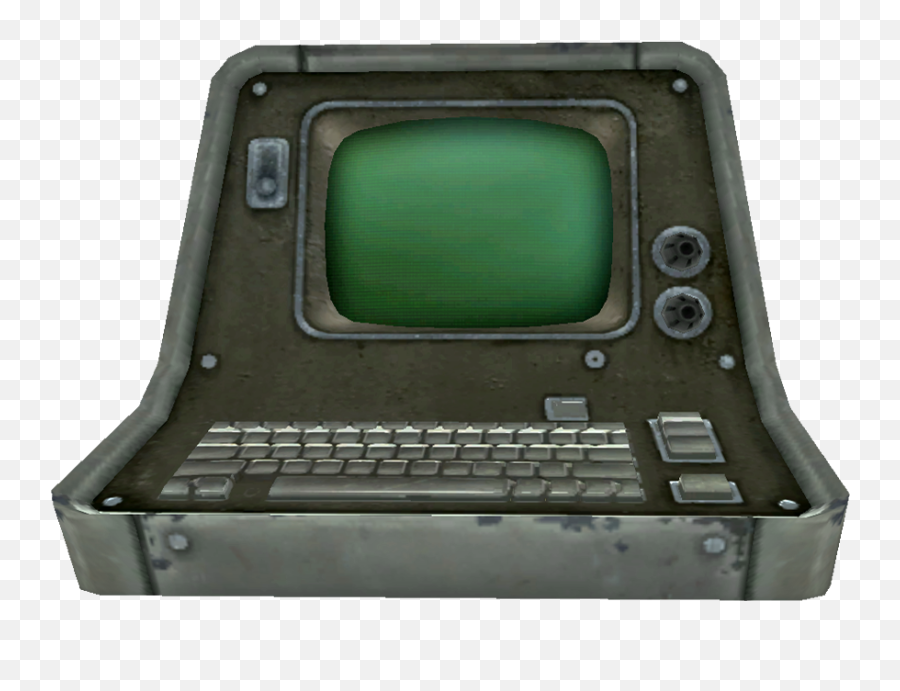

SQL: Язык, который понимают все машины
Декларативный язык запросов к реляционным базам данных. Вы описываете результат — СУБД берёт план выполнения на себя. Один вопрос вместо сотни строк процедурного кода.

DATALINE/3270 READY
----------------------------------
SELECT name, salary
FROM employees
WHERE salary > 50000;
----------------------------------
24 ROWS SELECTED
Что такое SQL
ДЕКЛАРАТИВНОСТЬ · РЕЛЯЦИОННАЯ МОДЕЛЬПользователь описывает результат, а СУБД сама выбирает план выполнения. Это и есть декларативность: машине не нужен алгоритм, ей достаточно описания того, что вы хотите получить.
До SQL доступ к данным требовал навигации по структурам — сетевые и иерархические модели, как в IMS. Реляционная модель предложила другой путь: данные — это таблицы, а запросы — операции над множествами.
Почему это английский
В 1974–1977 годах Дональд Чемберлин и Рэй Бойс из IBM San Jose Research Laboratory создали язык SEQUEL — Structured English Query Language, структурированный английский язык запросов — для экспериментальной СУБД System R. В 1977 году язык переименовали в SQL из-за конфликта торговой марки.
Так что это не фигуральная шутка: это действительно английский. Просто английский, который понимает машина, а не человек.
Пример запроса
SELECT * FROM employees WHERE salary > 50000;
Пояснение: «выбери всё из таблицы сотрудники, где зарплата больше 50000». Запрос читается как фраза — СУБД понимает её без перевода и без подсказок о том, в каком порядке искать данные.
Что получает аналитик
Один запрос может заменить сотни строк процедурного кода. Декларативность снизила порог входа: работать с данными смогли аналитики и бизнес-пользователи, а не только инженеры, пишущие обходы таблиц.
История и стандарт
ОТ КОДДА ДО SQL-92| Год | Событие | Значение |
|---|---|---|
| 1970 | Эдгар Ф. Кодд (IBM) публикует статью «A Relational Model of Data for Large Shared Data Banks» | Начало реляционной модели |
| 1974–1977 | Дональд Чемберлин и Рэй Бойс создают SEQUEL в IBM San Jose Research Laboratory для СУБД System R | Рождение языка |
| 1977 | SEQUEL переименован в SQL из-за конфликта торговой марки | Имя, которое знает весь мир |
| 1979 | Relational Software Inc. (позже Oracle) выпускает первую коммерческую реализацию SQL | Язык выходит в бизнес |
| 1986 / 1987 | ANSI принимает SQL как стандарт; следом ISO | Единый стандарт ANSI/ISO |
| 1992 | Выходит SQL-92, важнейший стандарт | Синтаксис, который изучают до сих пор |
Ключевые имена
Эдгар Кодд · Дональд Чемберлин · Рэй Бойс. Их работа превратила исследовательский язык в обязательный язык корпоративных СУБД: Oracle, IBM DB2, Sybase, Informix.
Стандарт как гарантия
Английский, изначально заложенный в название SEQUEL, получил официальную рамку. К 1992 году один и тот же язык понимали все основные СУБД — знания переносились между системами без переучивания.

Программа курса
5 МОДУЛЕЙ · ФОРМАТ MANUAL IBM| № | Модуль | Содержание |
|---|---|---|
| 1 | Основы SELECT | Тот самый английский: проекция, условие, сортировка. Научиться говорить с машиной «что», а не «как». |
| 2 | JOIN и подзапросы | Соединение таблиц реляционной модели, вложенные запросы, работа с несколькими наборами данных сразу. |
| 3 | Транзакции и целостность | Изменения банковских и учётных данных, поддержание целостности базы при совместной работе пользователей. |
| 4 | Оптимизация запросов | Как СУБД выбирает план выполнения и как помочь ей выбрать правильный. |
| 5 | Работа с DB2 и Oracle | Практика на внедрённых корпоративных СУБД: один и тот же стандарт на разных машинах. |
Шутка внутри программы
Первый модуль начинается не с синтаксиса, а с языка: «выбери», «где», «соедини». Если вы читаете эти слова — вы уже владеете материалом первого занятия.
Формат занятий
Таблица модулей, набор запросов на терминале, разбор плана выполнения, опорный manual. Занятия идут в учебном классе учебного центра «DataLine».
История ученика
БАНКИ · ОТЧЁТЫ · ТЕРМИНАЛБанки, страхование и государственные системы — именно они в эпоху стандартизации массово переходили на реляционные СУБД. Запрос вместо процедурного обхода таблиц: аналитик описывает результат, отчёт готов.
Справка
SQL применяется системными аналитиками, администраторами БД, разработчиками и бизнес-пользователями. В эпоху стандарта язык стал обязательным для корпоративных систем.
Требования к компьютеру
ТЕХНОЛОГИЧЕСКАЯ СРЕДА КУРСА| Позиция | Требование |
|---|---|
| Терминал | IBM 3270 или совместимый |
| Доступ | Рабочая СУБД с поддержкой стандарта: DB2, Oracle |
| Материалы | Manual SQL-92 |
| Язык | Отдельного английского не требуется: SQL — это английский. Просто английский, который понимает машина. |
| Аппаратура | Требований к аппаратуре нет: работа идёт на терминалах мейнфрейма |
Шутка в строке требований
Единственный пункт, который пугает слушателей, уже закрыт: машина не ждёт от вас литературного английского. Она ждёт запроса.

Призыв к действию
ЗАЯВКА · СТАНДАРТ · БУДУЩЕЕВаши данные ждут ответа на английском. Машина уже понимает его — осталось научиться говорить с ней на том же языке. Курс даёт этот язык, стандарт и практику на реальных корпоративных СУБД.
Учебный центр
«DataLine»
Корпоративный учебный центр
Отдел корпоративного обучения
Приём заявок
Лично в учебном классе
или через оператора ЭВМ
тел. 01-86-92
Обещание
Ваши данные будут говорить на одном языке — и вы будете понимать их без перевода.